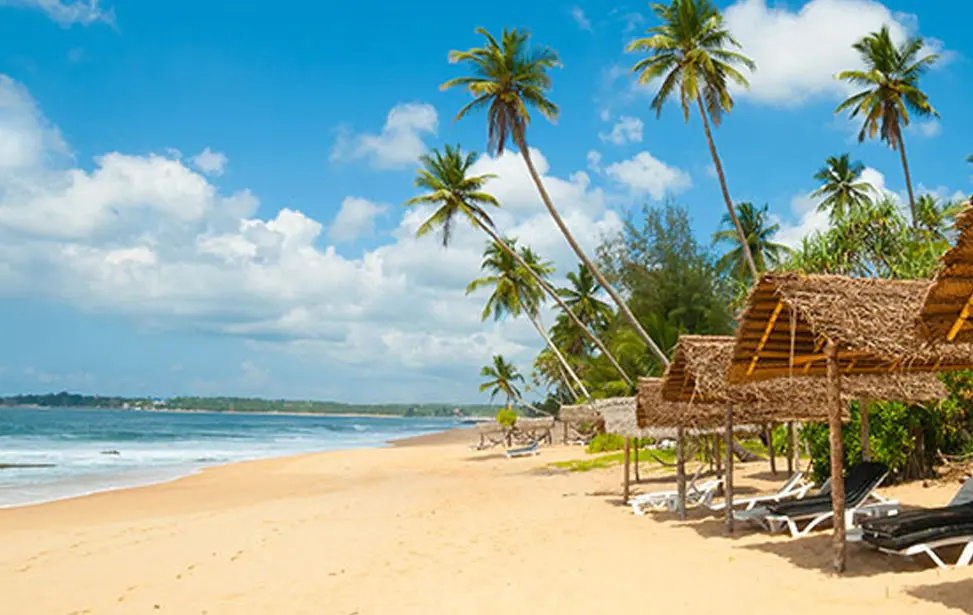
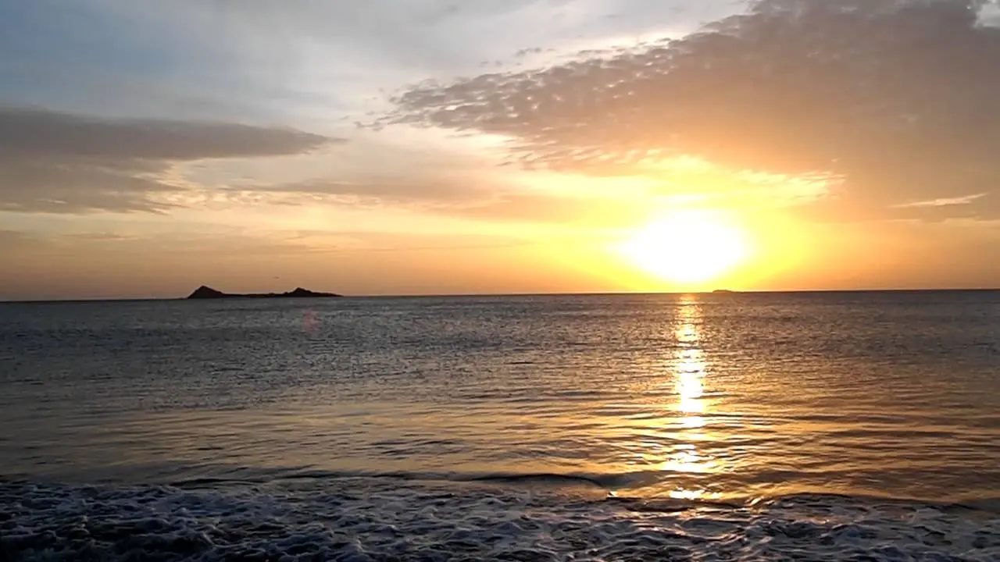
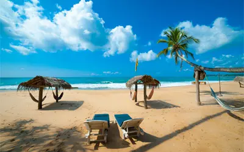
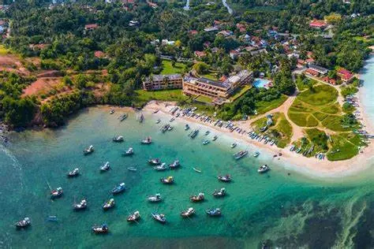
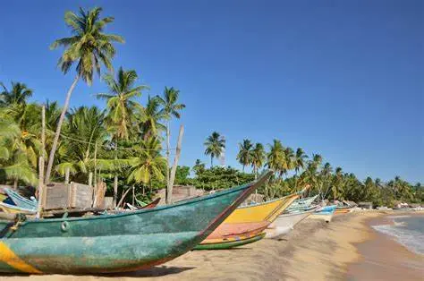
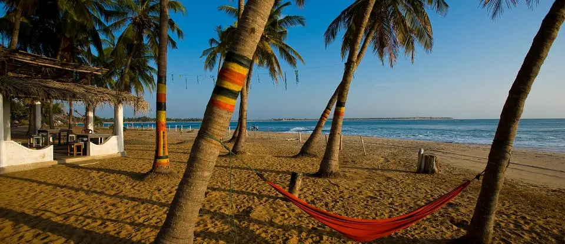
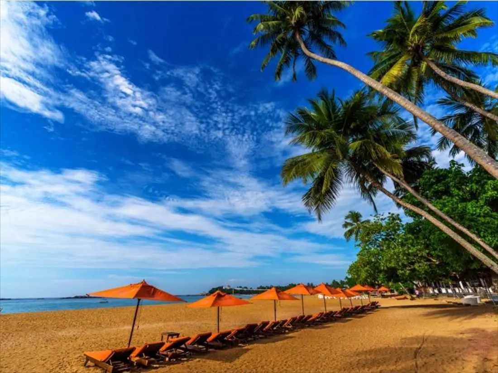
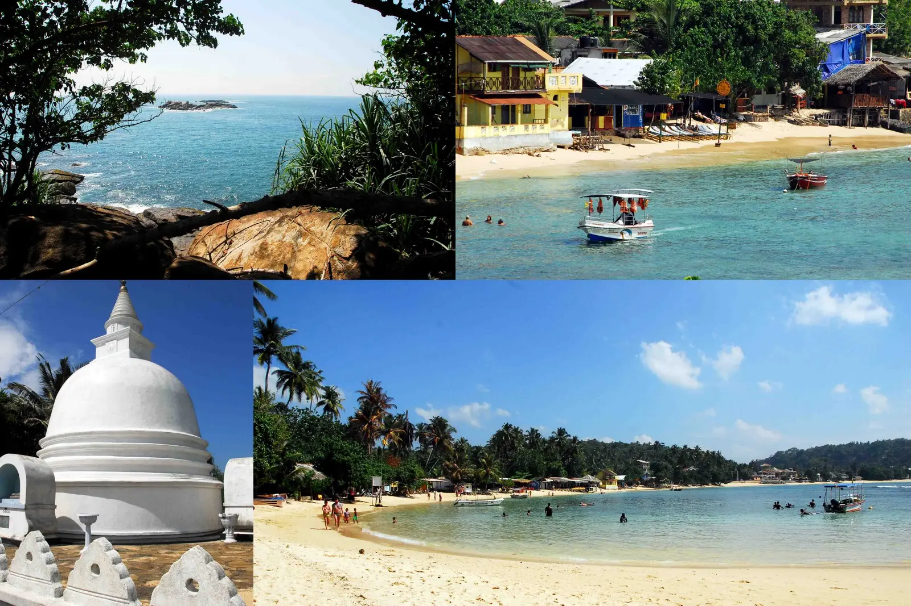
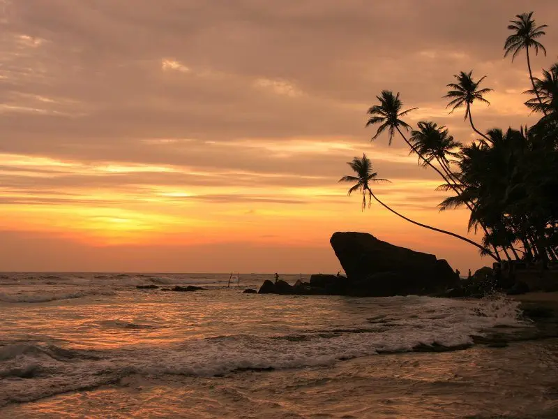

When we say island, what's the first thing that springs to mind? Of course, there are beaches. Sri Lanka is well-known for doing just that. People travel from all over the world to visit Sri Lanka's beautiful beaches. The magnificent views of these wonderful sandy coasts will entice you to return to these stunning beaches in and around Sri Lanka. The beaches of Sri Lanka are, without a doubt, the ideal location for complete rejuvenation and recharging. If you're a beach bum who's only visiting Sri Lanka to explore its coastline, you should check out these Sri Lankan beaches.
CHECK OUT
Nilaveli Beach



The Nilaveli Beach is located near Nilaveli, a coastal hamlet about 16 kilometers north of Trincomalee. It's a lovely white sand beach with waves that's great for surfing, diving, and snorkeling.
The famed Piegon Island lies about 2 kilometers out to sea, while the Red Rock Beach is located further north. Nilaveli is among Sri Lanka's nicest and most picturesque beaches.
Returning during the seasons allows travelers from diverse nations to better convey their passionate moments. The beach is made up of a white coral sand beach where anyone may relax and enjoy some alone time.
With its diverse vegetation, reef fish, and corals, Nilaveli is a biodiversity hotspot. Coconut palm groves and animals thrive in the area. Nilaveli Beach draws a significant number of tourists and locals throughout the year due to its golden sand and turquoise waters.
CHECK OUT!
Nilaveli Beach Hotel
Arugam Bay



Arugam Bay, also known as 'Arugam Kudah,' is located on Sri Lanka's east coast, around 320 kilometers from Colombo. From Ella or Trincomalee, you may reach Arugam Bay Beach. Arugam Beach is about 2 hours 30 minutes from Ella and 5 hours from Trincomalee. Colombo to Arugam Beach takes about 7 hours via bus or taxi.
Arugam Bay's lengthy ribbon of beach, partially shaded by coconut palms, is reason enough to visit. Its allure to surfers is clear during the season, but it is simply a great location to relax and rest all year. A active fishing hamlet may be found on the southern side of the beach, with wooden shacks crammed together at the top of the sand for the hard-working employees. Residents congregate here at evening for a conversation and a swim.
Arugam Beach is one of the top ten surfing destinations in the world, according to Wikipedia. If surfing isn't your thing, you can unwind with a local yoga class or take a stroll along the gorgeous beaches.
CHECK OUT!
Bay Vista Hotel
Unawatuna Beach



Unawatuna is a small town in southern Sri Lanka, around 145 kilometers from Colombo and 5 kilometers from Galle. A cab ride from Colombo to Unawatuna takes roughly 2 hours. You can also take a train from Colombo to Unawatuna, which would take approximately 3 hours and 30 minutes.
Unawatuna Beach is one of Sri Lanka's most famous tourist destinations. The spectacular beauty of Unawatuna Beach has been known to attract both locals and visitors. It is one of the destinations on practically everyone's travel bucket list.
The beach at Unawatuna is known for its beautiful palm trees, clear water, and golden sand. Unawatuna Beach is a small private beach in the shape of a banana. The walk from one end of the beach to the other takes around 15 minutes. The beach is ideal for strolling because it has a great view of the pagoda and the Buddha statue.
CHECK OUT!
Angel Beach Unawatuna